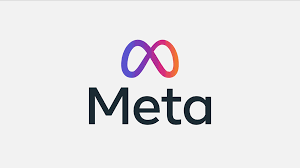
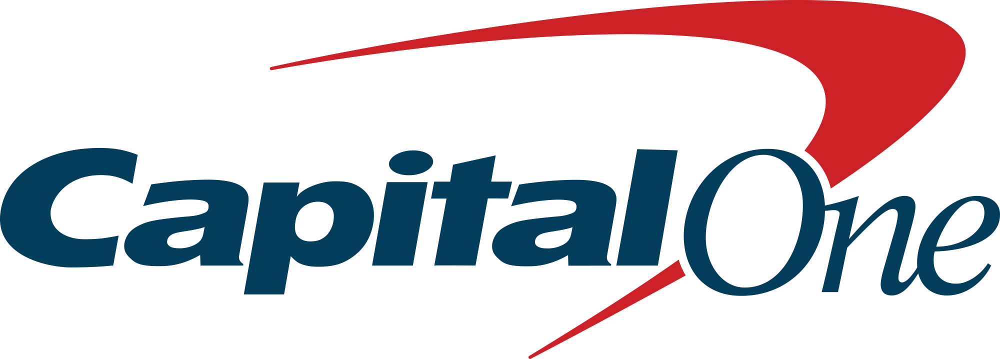

Thank you to our sponsors!


Questions?
Please contact us at trustnlpworkshoporganizers@gmail.com.
Colocated with the 2026 Annual Conference of the Association for Computational Linguistics (ACL 2026)
San Diego, California, United States
With the rapid advances in AI, empowered by large language models (LLMs) and natural language processing (NLP) techniques, there is an increasing integration of AI systems that directly interact with users and facilitate our daily tasks. In particular, the recent development of agentic models allows users to communicate directly with AI for complex tasks such as coding, web surfing, information seeking, and deep research. These models integrate NLP techniques with computer vision, systems engineering, and other social and physical sciences, expanding the boundaries of what AI systems can accomplish and making NLP systems omnipresent in various aspects of our everyday life. This makes the development of reliable, responsible, ethical, and safe AI increasingly important.
This year, we are excited to host our TrustNLP workshop at ACL 2026, inviting participants and papers that focus on developing models that are explainable, fair, privacy‑preserving, causal, and robust. In particular, we have secured sponsorship from major companies in the field, including Meta, Capital One, and Amazon. We will use the funding to promote diversity, participation, and mentoring, furthering our mission.
We invite papers that focus on different aspects of safe and trustworthy language modeling. Topics of interest include (but are not limited to):
We welcome contributions that also draw upon interdisciplinary knowledge to advance Trustworthy NLP. This may include working with, synthesizing, or incorporating knowledge across expertise, sociopolitical systems, cultures, or norms.
All submissions undergo double‑blind peer review (with author names and affiliations removed) by the program committee, and they will be assessed based on their relevance to the workshop themes.
All submissions go through the OpenReview platform. To submit, use this submission link.
Submitted manuscripts must be 8 pages long for full papers and 4 pages long for short papers. Please follow ACL submission policies. Both full and short papers can have unlimited pages for references and appendices. Please note that at least one of the authors of each accepted paper must register for the workshop and present the paper.
Template files can be found here.
We also ask authors to include a limitation section and broader impact statement, following guidelines from the main conference.
If your paper has been reviewed by ACL, EMNLP, EACL, or ARR and the average rating is higher than 2.75 (either average soundness or excitement score), the paper is qualified to be submitted on the fast track. In the appendix, please include the reviews and a short statement discussing what parts of the paper have been revised.
ACL workshops are traditionally archival. To allow dual submission of work, we are also including a non‑archival track. If accepted, these submissions will still participate and present their work in the workshop. A reference to the paper will be hosted on the workshop website (if desired), but will not be included in the official proceedings. Please submit through OpenReview but indicate that this is a cross‑submission at the bottom of the submission form. You can also skip this step and inform us of your non‑archival preference after the reviews. Papers accepted to the Findings of ACL 2026 may also submit non‑archival to the workshop.
Accepted and under‑review papers are allowed to be submitted to the workshop but will not be included in the proceedings.
No anonymity period will be required for papers submitted to the workshop, per the latest updates to the ACL anonymity policy. However, submissions must still remain fully anonymized.
Organizers
If you are interested in reviewing submissions, please fill out this form.
Please contact us at trustnlpworkshoporganizers@gmail.com.